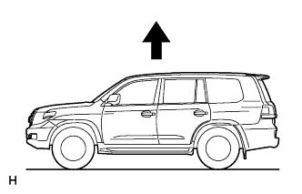
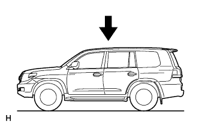

ACTIVE HEIGHT CONTROL SUSPENSION > ON-VEHICLE INSPECTION |
| 1. OPERATE HEIGHT CONTROL SWITCH AND CHECK CHANGE OF VEHICLE HEIGHT |
Set the tires to the specified tire pressure, and adjust all 4 wheels.
For the front side, measure the ground clearance of the front adjusting cam bolt center.
For the rear side, measure the ground clearance of the rear lower control arm front side center.
Start the engine.
 |
Push the height control switch to change from "N" to "HI" mode.
Check the time required for the height change and the changed amount of the vehicle height.
| Vehicle Condition | Fluid Temperature Condition | Reference Value |
| "HI" mode (Up time) | 20°C (68°F) +/-10°C (50°F) | Approximately 15 seconds or less |
| Item | Specified Condition |
| Front | Approximately +50 mm (+1.97 in.) |
| Rear | Approximately +60 mm (+2.36 in.) |
 |
Push the height control switch to change from "N" to "LO" mode.
Check the time required for the height change and the changed amount of the vehicle height.
| Vehicle Condition | Fluid Temperature Condition | Reference Value |
| "LO" mode (Down time) | 20°C (68°F) +/-10°C (50°F) | Approximately 10 seconds or less |
| Item | Specified Condition |
| Front | Approximately -60 mm (-2.36 in.) |
| Rear | Approximately -40 mm (-1.57 in.) |
| 2. INSPECT FLUID PRESSURE |
Turn the engine switch off.
Connect the intelligent tester to the DLC3.
Start the engine and turn the tester on.
Press the UP button of the height control switch. Using the Data List, check the oil pressure when the vehicle height changes from NORMAL to HI.
| Tester Display | Measurement Item/Range | Normal Condition | Diagnostic Note |
| Oil Pressure Sensor | Fluid pressure sensor reading / min.: -784.79 MPa (-8002.66 kgf/cm2, -113794.55 psi) max.: 784.76 MPa (8002.354 kgf/cm2, 113790.2 psi) | - | - |
| Vehicle Condition | Fluid Temperature Condition | Reference Value |
| When vehicle height changes from NORMAL to HI | 20°C (68°F) +/-10°C (50°F) | The oil pressure begins rising when control is started and reaches approximately 13 MPa (132.6 kfg/cm2, 1885 psi) when the vehicle height is almost finished changing to HI. |
Set the vehicle height to LO and press the UP button of the height control switch. Then check the oil pressure when the vehicle height changes from LO to NORMAL.
| Vehicle Condition | Fluid Temperature Condition | Reference Value |
| When vehicle height changes from LO to NORMAL | 20°C (68°F) +/-10°C (50°F) | The oil pressure begins rising when control is started and reaches approximately 8 MPa (81.6 kfg/cm2, 1160 psi) when the vehicle height is almost finished changing to NORMAL. |
| 3. INSPECT VEHICLE SPEED SENSING FUNCTION |
Turn the engine switch off.
Connect the intelligent tester to the DLC3.
Turn the engine switch on (IG) and the tester on.
Using the Data List, check the vehicle speed sensing function.
| Tester Display | Measurement Item/Range | Normal Condition | Diagnostic Note |
| Height Mode | Height mode / NORMAL / ACCE LO / LO / STAN LO / FAST LO / L4 HI / HI / EX HI | Actual conditions are displayed. | - |
When the transfer is in the L4 position:
When the vehicle is driven at a speed of approximately 3 km/h (2 mph) or more, check that the vehicle height changes to HI using the Data List.
Using the Data List, check if the vehicle height changes from HI to L4 HI when the vehicle speed is 40 km/h (25 mph) or more.
When driving at a high speed:
Using the Data List, check that the vehicle height lowers when the vehicle height is NORMAL and the vehicle speed is 100 km/h (62 mph) or more.
Using the Data List, check that the vehicle height returns to NORMAL when the vehicle speed is reduced to less than 80 km/h (50 mph).
When vehicle height control is prohibited:
Press the height control OFF switch to prohibit vehicle height control.
Drive the vehicle at 80 km/h (50 mph) or more with the vehicle height NORMAL, or drive the vehicle at 30 km/h (19 mph) or more with the vehicle height not NORMAL and, using the Data List, check that vehicle height control prohibition is canceled.
| Tester Display | Measurement Item/Range | Normal Condition | Diagnostic Note |
| Height Control Prohibition | Vehicle height control prohibition information/ Permiss or Prohibi | Actual conditions are displayed. | - |